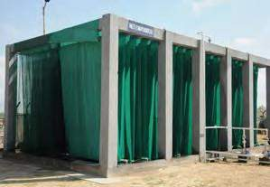

Sustainability
Every colour we use, the water goes back in.
Zero liquid discharge — all dyeing water is recycled and reused
Solar power generation infrastructure at our Bagru unit
Litres of rainwater storage capacity
Zero-liquid-discharge effluent treatment plant capacity
The Bagru Unit
A dyeing plant that doesn't discharge into the ground.
Our 30,000 sq ft production, dyeing, and printing unit at Bagru — 25km from Jaipur — was built as a state-of-the-art, 100% socially and environmentally compliant facility.
Every litre of water used to dye our wool is treated through a Central Effluent Treatment Plant and a Net Evaporator, meeting a 100% zero-liquid-discharge standard as per pollution control norms. Nothing goes back into the ground untreated.
More detail on the unit is available at jaipurbloc.com.

Central effluent treatment plant
Solar generation on-site
Energy & Water
Rain, stored. Sunlight, put to work.
A rainwater storage pond with a capacity of 1.25 million litres feeds into our production cycle, reducing dependence on groundwater. Alongside it, 42kW of solar power generation infrastructure supports the cause of sustainable production across the facility.
It's a deliberate choice: design-sensitive export markets expect quality, but we don't think that quality should come at the cost of the land or the water around it.
Sustainability Is Also Social
Environmental care and fair work, together.
Our Kanakpura facility was deliberately built close to residential areas — so the 120 women who work there don't have to travel far from home. It's part of the same philosophy that shapes our environmental choices: build systems that work with people and place, not against them.
Read more about our people →
Questions About Our Process?
We're glad to talk specifics.
Compliance documentation, audit reports, or a facility walkthrough — reach out and we'll point you to what you need.
Contact Us